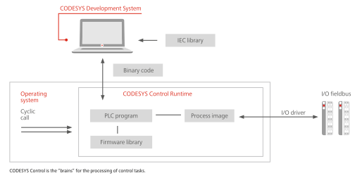

1.1. Introduction¶
A runtime system is referred to as the software, that is running on a system that controls a device or a machine. CODESYS Control is here the product name of the runtime system of CODESYS GmbH.
CODESYS is the product name of the complete software family of IEC 61131 programming tools.
Control stands for the runtime system to control a machine.
The runtime system CODESYS Control V3 is a completely new development of 3S. It is based on more than 10 years of experience in the automation technology and is provided for a wide range of operating systems and processors.
In this document, the runtime system CODESYS Control Version V3 is declared in detail. With this document we give you all basic information to start working with it and to understand the internal mechanisms.
1.1.1. Runtime System in the Overall System¶
The runtime system is running typically in a PLC (programmable logic controller). The runtime system is connected via a communication media to communicate with clients (CODESYS, HMO, OPC-Server, etc.)..
Warning: For security reasons, controllers, specifically, their TCP/IP programming ports (usually UDP-Ports 1740..1743 and TCP-Ports 1217 + 11740 or the controller specific ports) must not be accessible from the Internet or untrusted Networks under any circumstances! In case Internet access is needed, a safe mechanism has to be used, like VPN and password protection of the controller. When you are going to start CODESYS Control Win V3 from the systray menu, you will get an appropriate warning in a dialog box, where you still can cancel the startup.
On the other side, the runtime system is typically connected to the IO-system (field busses, local IOs) and/or drives of the machine that is controlled.
1.1.2. Mission of the Runtime System¶
The runtime system CODESYS Control provides the following main functions
- Execution of the IEC application(s), that are created with CODESYS V3
- Debugging of the IEC application
- Connection to the IO-system and/or drives
- Communication with the programming tool CODESYS V3 or another client (e.g. HMI)
- Routing for communication to subordinate runtime systems
- Runtime system to runtime system communication